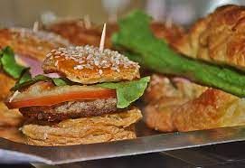
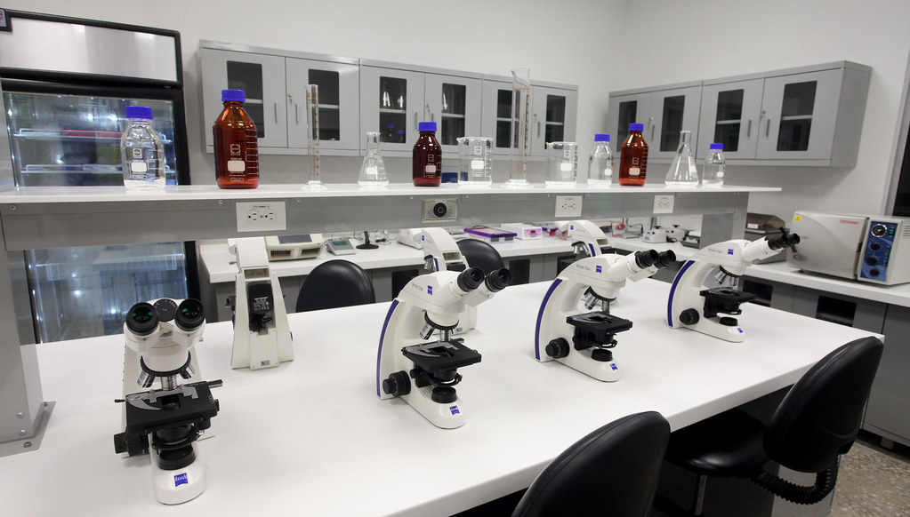
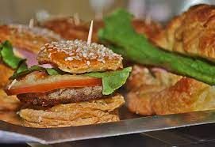
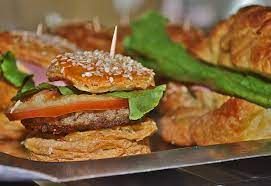

Nuestra universidadposee dos polideportivos donde sin duda, son unas de las mejores áreas de esta universidad, pues su amplio espacio permite la satisfacción de sus alumnos al tener mas libertad al momento de moverse dentro y fuera de las canchas. Los
equipos de la universidad de futsal, volleyball y basquetball realizan sus entrenamientos en sllos. Los asientos son sumamente cómodos con suficiente espacio entre cada fila, para que los jugadores de los equipos reciban el cálido apoyo de
sus familiares y amigos.
Polideportivo de Futsal y Volleyball a la Izquierda y Polideportivo de Basquetball a la derecha
Cafetería Gastronómica
Nuestra amplia cafeteria tiene un ambiente tranquilo y agradable, con un ventanal que muestra una vista espectacular. La posición de las mesas está pensada para que los estudiantes tengan suficiente espacio para que se puedan sentar con sus amigos ya
sea para platicar o comer, entre otras cosas. Una de las mejores cosas de nuestra cafetería es la comida gastronómica que ofrece, pues tiene una amplia variedad de ricos alimentos no solo de nuestro pais pero tambien de ciertos paises al rededor
del mundo.

Amplia Cafetería y Buena Comida
Laboratorios Modernos
Tenemos una amplia variedad de laboratorios modernos para nuestras distintas carreras universitarias. Entre ellos estan el laboratorio de biología, laboratorio de química, laboratorio de mecatrónica y el laboratorio de programación como los mas atractivos
e interesantes. La utilería de nuestros laboratorios es la mas actualizada y de las mejores marcas, pues nos preocupamos por priorisar que nuestros alumnos tengan una buena experiencia en la realización de sus laboratorios.

Laboratorio de Biología y Laboratorio de Mecatrónica
 
